The need or friction, in people’s words, in one short sentence.
Interaction and UX designer with a background in computer science.
Who I am
Useful to as many people as possible.
Beautiful enough to make them stay.
Profile
I am finishing a BSc in Interfaces and Communication Technologies at the University of Trento. I come from computer science, so I design products end to end: from research in people’s real context to interfaces I can build and test.
Education
Details
Recognition and experience
Social Impact Award, UX Challenge 2026
Trentino Innovation Hub, for Gruppo Spes. Team leader and UX designer.
University AI Championship
AI2B · Participant
User interface developer
Front-end of a Java school-management system, in a startup simulation.
Italian Olympiads in Informatics
MIUR, AICA · Participant
Where I’m heading
Designing the experience,
and building the technology behind it.
Connected products and systems
Devices, rooms and services that work together and stay understandable to the people living with them.
Smart Home Hub · AuraWake
Tangible and embodied interaction
Experiences that live in objects, light, sound and the body, not only on a screen.
AuraWake · Realiti · JustCook
Physical and virtual prototyping
Ideas made real early, on screen, in XR or in hand, then tested with people.
Realiti · Smart Home Hub
Selected projects
01
Graphical Interface Design · University of Trento
An Android app that brings every device of a smart home into one place, designed to settle doubts rather than add controls.
Overview
One sentence on the project: who it is for, and what it changes for them.
The need or friction, in people’s words, in one short sentence.
How we tackled it: the method and the key decision.
What came out of it: the product and its result.
Course name, university
Months, year
Size and disciplines
What I did, in a few words
Interviews, mapping, prototyping…
Figma, Unity, Arduino…
The problem in one sentence, seen from the people who live it.
Two or three lines of context: where it happens, who is involved, why it matters now. Facts only, no filler.
00%
What the number means, in one line.
Source, year
0 in 0
A second fact that frames the problem.
Source, year
What we did to understand people, and with whom.
00
Interviews
With whom, where, how long
00
Survey answers
Sample and channel
00
Observations
Where and when
00
Benchmarks
Products compared
The few findings that changed the design.
“A participant’s quote that sums the research up.”
— Participant, context
Insight title
The evidence behind it, in two lines: what we saw or heard.
0/0participants said so
Insight title
The evidence behind it, in two lines: what we saw or heard.
0/0participants said so
Insight title
The evidence behind it, in two lines: what we saw or heard.
0/0participants said so
Insight title
The evidence behind it, in two lines: what we saw or heard.
0/0participants said so
How might we … for … so that … ?
Who we design for
Persona A
Persona B
GoalWhat they want
What they want
ContextWhere, when, with whom
Where, when, with whom
FrictionWhat gets in the way
What gets in the way
Quote“In their words.”
“In their words.”
Design principles
From many sketches to one concept, and why this one.
How the pieces work together: people, devices, data and space.
Built early, tested with people, changed by what we saw.
What we tested, and with whom
What we saw, and what changed in the next round.
What we tested, and with whom
What we saw, and what changed in the next round.
What we tested, and with whom
What we saw, and what changed in the final design.
The result in one sentence: what people can now do.
The key interaction, step by step.
What it achieved, and what I would do differently.
Results
00
Measured result, or target (never mixed).
00
Grade, award, test score or adoption.
If I started again
02
Three courses · University of Trento
Pre-portioned boxes and an adaptive planning app that turn “I should eat better” into a balanced dinner in twenty minutes.
Overview
For off-site students, the healthy dinner becomes the easiest one to make.
Students know what a balanced meal is. The effort between intention and plate stops them.
Research in students’ kitchens, six reframing cycles, a value proposition canvas.
Four pre-dosed boxes and an app that plans the real week. A concept with targets, not results.
Semiotics, sociology and psychology of communication · University of Trento
Sep 2024 – May 2025
4 design students
End-to-end UX designer: research, framing, app, packaging
Survey, in-kitchen interviews, field observation, CPS, value proposition canvas
Figma, InDesign, Miro, Photoshop
Moving out, students cook alone for the first time: short on time, money and kitchen space.
A problem we lived ourselves as off-site students in Rovereto. Shops are sized for families, the kitchen is shared, and a delivery app is always one tap away.
92%
change their eating habits after moving out.
Lupi et al., 2015 · 258 students
>60%
eat take-away at least once a week.
Desk research
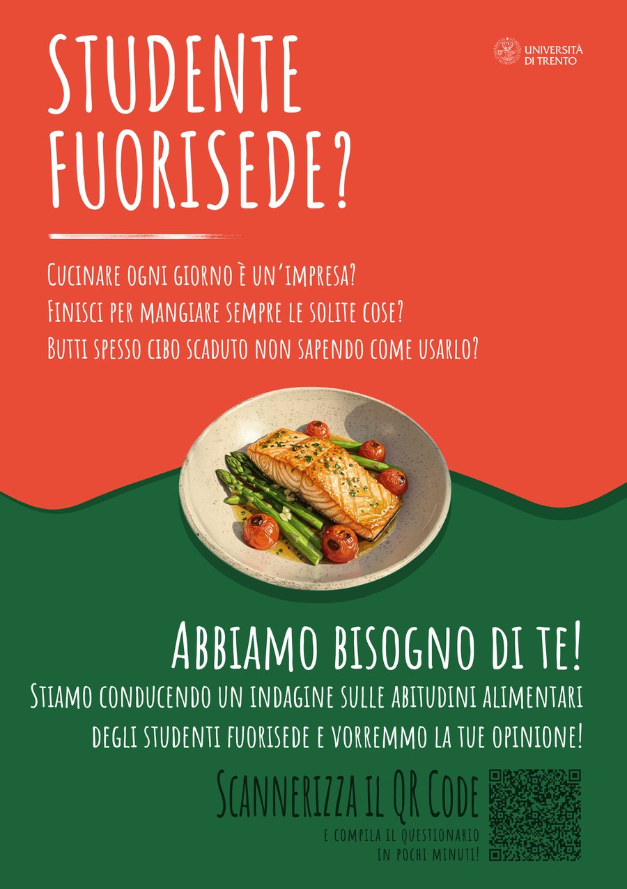
We moved the research into students’ kitchens, where the problem actually happens.
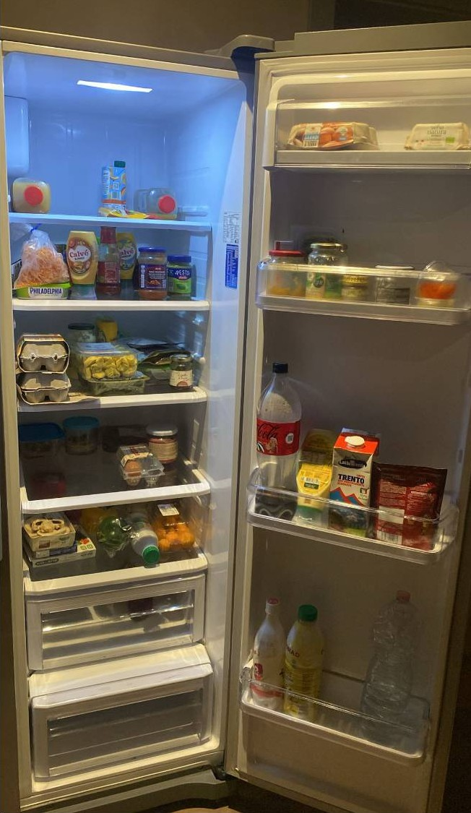
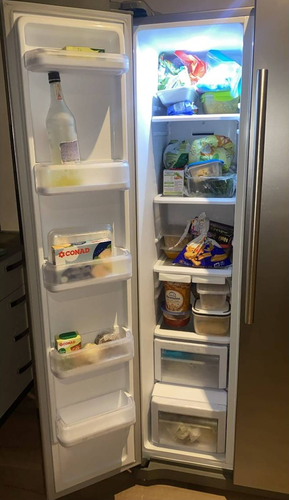
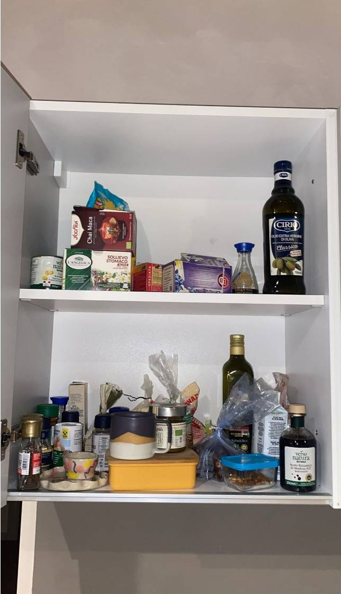
41
Survey responses
Student group chats and QR flyers
4
In-kitchen interviews
In their own kitchens, with photo elicitation
3
Field observations
Shopping, cooking, storing
36
Codes in 8 themes
One grid for every interview and note
Four findings, each one a constraint the solution had to respect.
“I’ve learned to reinvent food so I can still use it when it isn’t quite fresh.”
— Interviewee 3, off-site student (translated from Italian)
Time filters everything
Frozen vegetables and ready-made burgers are a survival strategy, not ignorance. A dinner has to fit 15–20 minutes.
20′at most: the real window
Rigid plans break
They shop around the days they are in town. Day-by-day plans collapse at the first exam or trip home.
>60%shop once a week
Retail is built for families
About half throw food away. Of those who try not to, almost all name the same obstacle.
95%blame packs too big for one
The shared kitchen has no rules
The first one in gets the stove. Less prep and less counter space make cooking more likely to happen.
≤3people cooking at once
How might we make a balanced, home-cooked meal the path of least resistance?
Two archetypes, synthesised from the coded interviews
The efficiency seeker
The conscious aspirer
WantsLess effort
Less waste
FrictionA chaotic shared kitchen and no time to plan
Principles vs reality; guilt about forgotten food
OpportunityFew decisions, meals that fit fifteen minutes
Buying exactly what will be cooked, for the real week
In short“More than fifteen minutes, or a fight for the stove, and I take the easy way.”
“I want to eat well and waste nothing, but the shop is made for families.”
Design principles
Six reframing cycles: each new framing exposed the flaw in the previous idea.
Who
Students who eat out
Problem
They rarely have balanced meals.
Problem only, no idea yet
Who
Students who eat out
Problem
Poor awareness of nutrition.
Problem only, no idea yet
Who
Students who eat out
Problem
They prefer unhealthy ready food.
IdeaHealthy ready-made food
Who
Students who eat out
Problem
A tight budget gets in the way of balanced meals.
Problem only, no idea yet
Who
Students who eat out
Problem
No time to cook.
IdeaReady-made meals
Who
Off-site students, 18–28, cooking for themselves
Problem
Little time and limited skills make balanced, portioned meals hard.
Idea
Pre-dosed single-portion boxes, planned through an app
Discarded on the way: healthy ready-made food. It saved time but took away the autonomy students were proud of, and did nothing for cost or waste. Creative Problem Solving, then a value proposition canvas to check the fit.
The app reduces the decisions, the box reduces the effort: one service, two layers.
Two versions in Figma: the course prototype, then a design with one decision per screen.
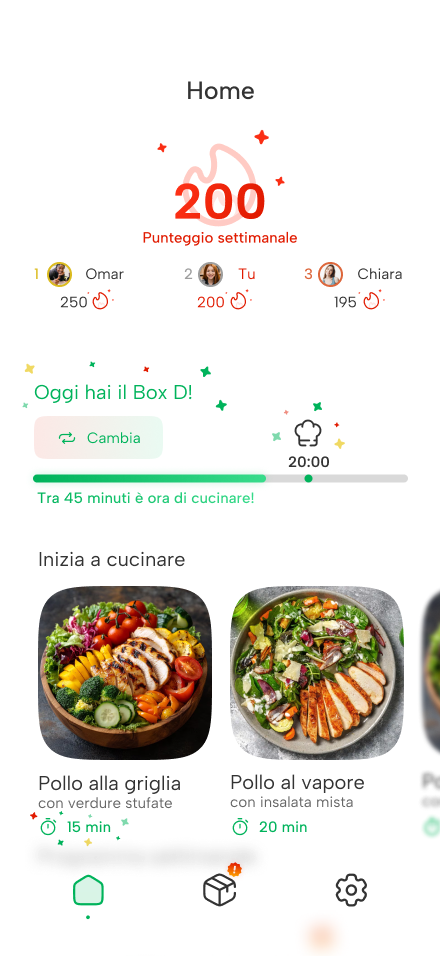
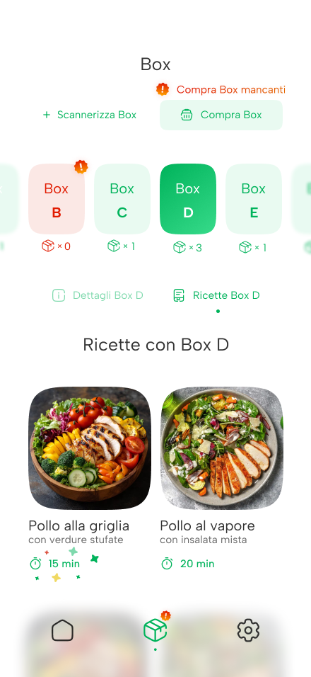
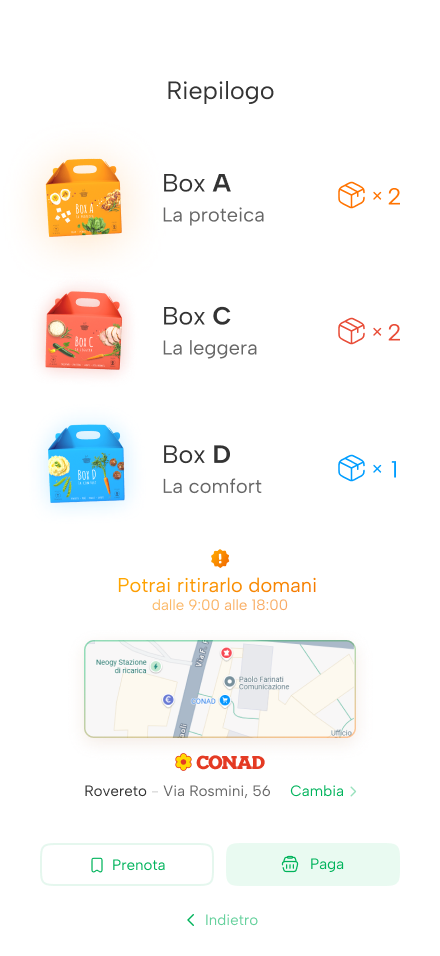
The whole flow, from weekly plan to pickup
Italian, built for the exam. Every screen carried several choices at once: boxes, recipes, purchase, points.
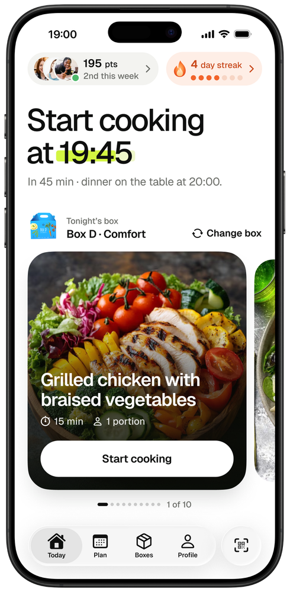
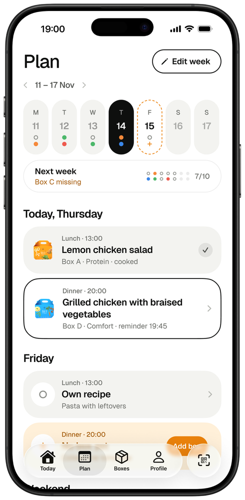
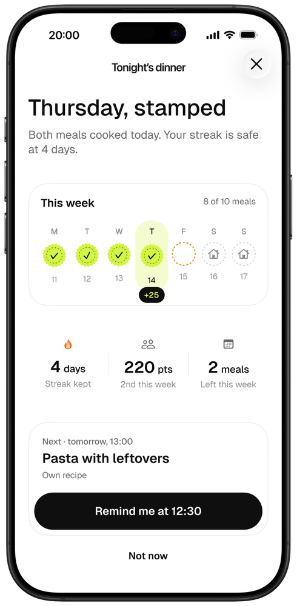
One decision per screen: when to start tonight
The code inside the lid, the reminder, the stamp. Not tested with users yet: the next step is five students cooking one box each.
Four boxes cover the week; the app plans it and nudges you before a delivery app wins.
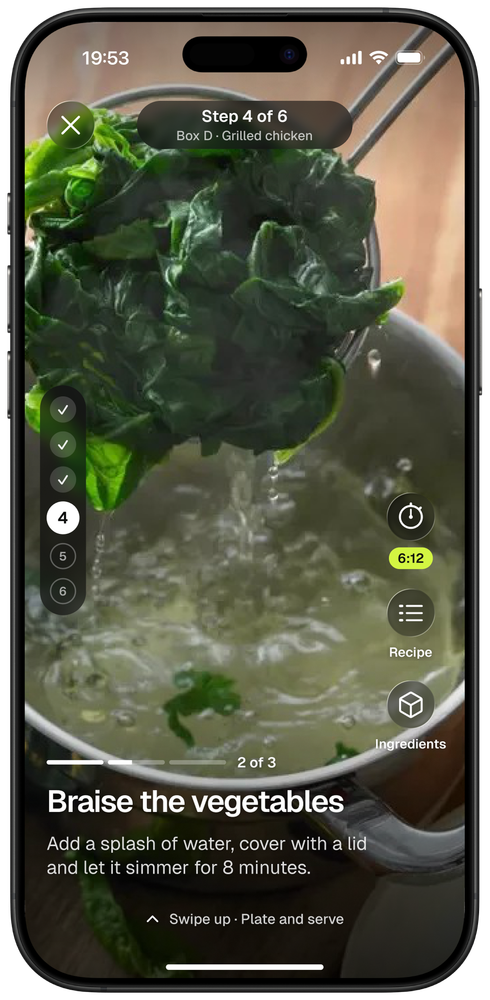
The nudge: a reminder timed backwards from the recipe.
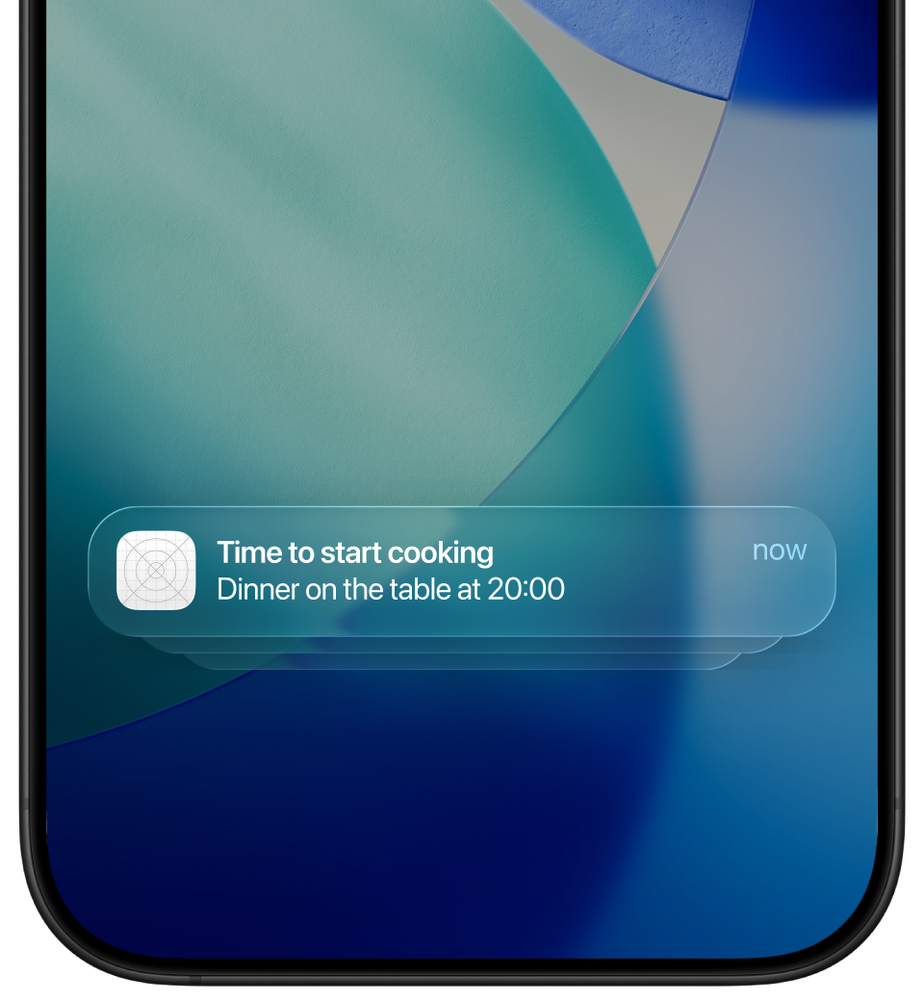
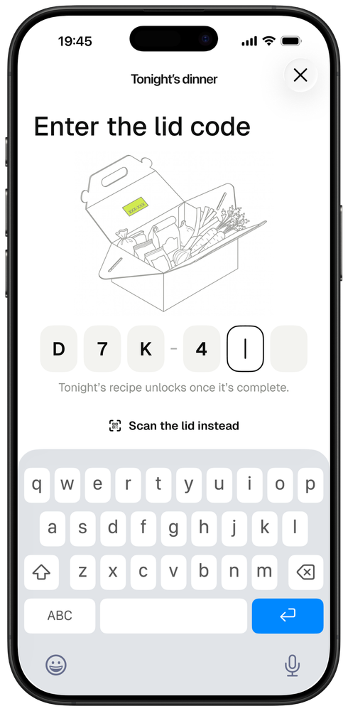
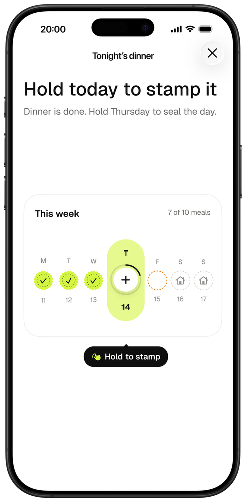
A brand students would share: four boxes, one colour each, and a campaign for group chats.
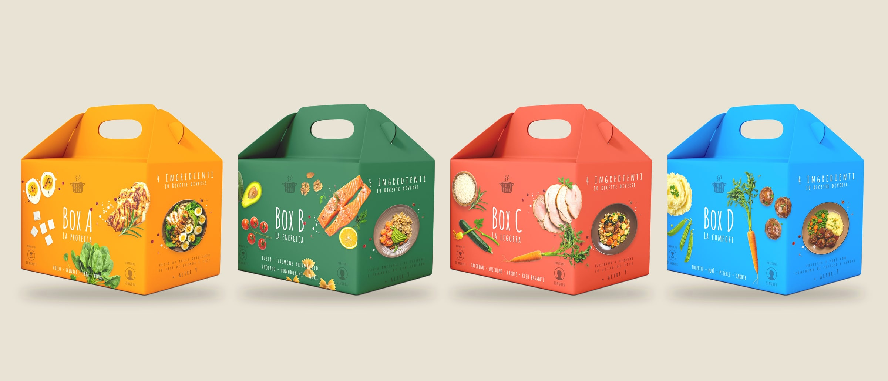
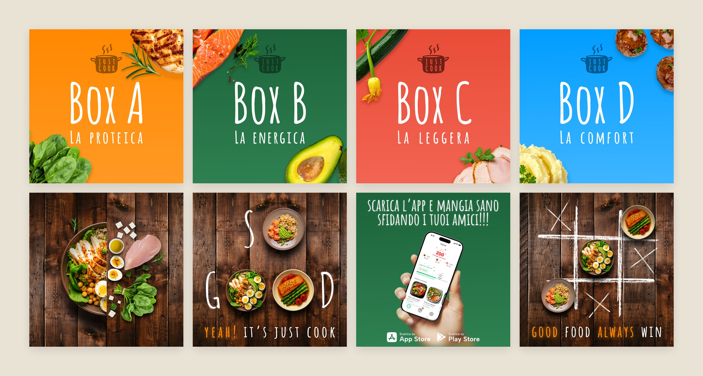
A concept, not a launch: targets to prove, and what I would do differently.
Targets for a pilot (not results)
−40%
food waste in the first month
<20′
from box to plate
>60%
still active at day 30
If I started again
03
Social Impact Award · Trentino Innovation Hub — or thesis
To be decided: the UX Challenge 2026 project for Gruppo Spes, or the thesis project.
04
Course or context
One sentence on what Realiti is.
05
Human–Computer Interaction 1 · University of Trento
An alarm with no buttons that wakes you gradually, with light, sound, scent and daylight, at the lightest moment of your sleep.
System
It doesn’t ring: it changes the room.
One night
Every change is a ramp, never a jump. The wake-up comes at the first light sleep.
In the room
The same nightstand, one night: only the light changes.
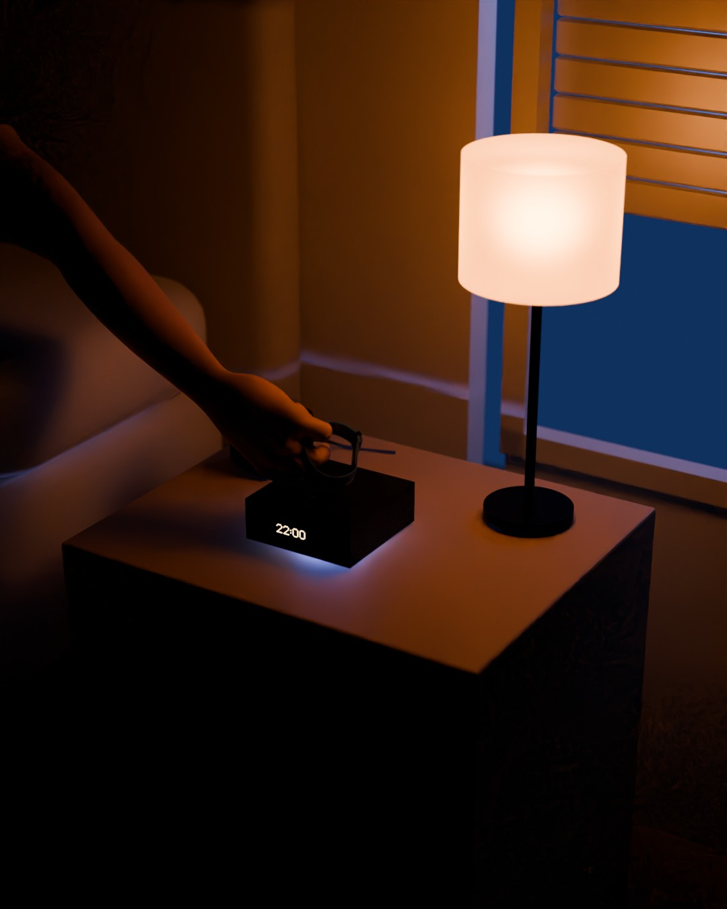
You take the bracelet: the ring glows violet, the lamp dims, the shutters close.
Nothing is lit. Darkness means all is well.
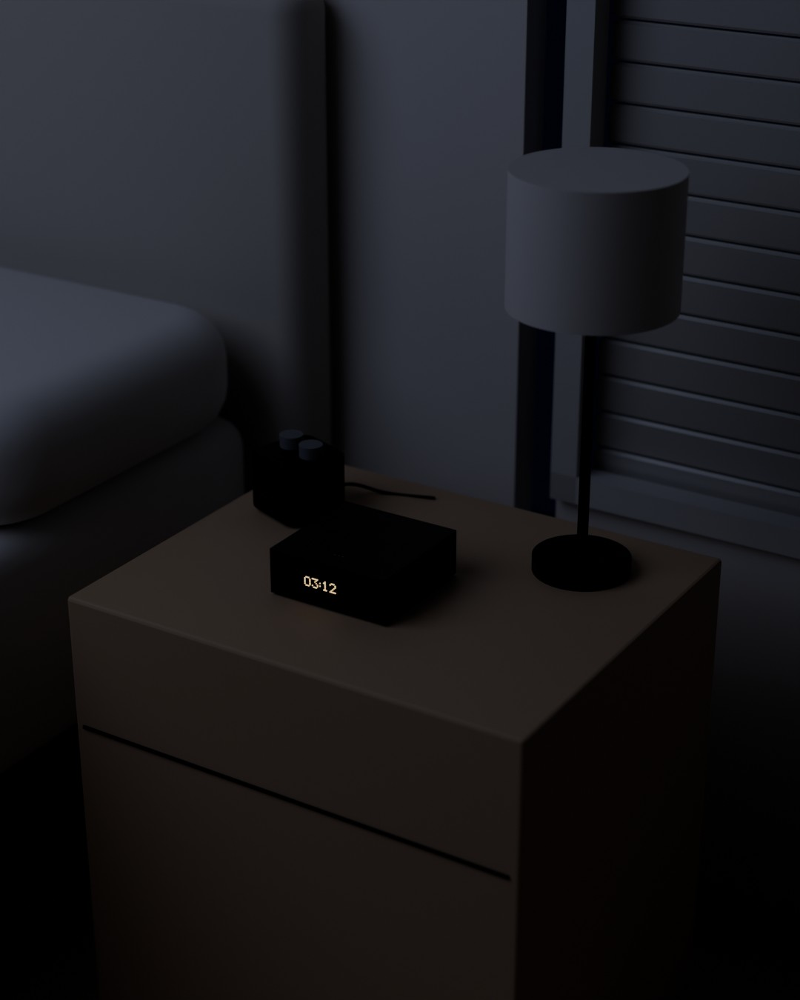
The time appears, dim and warm, while you are awake.
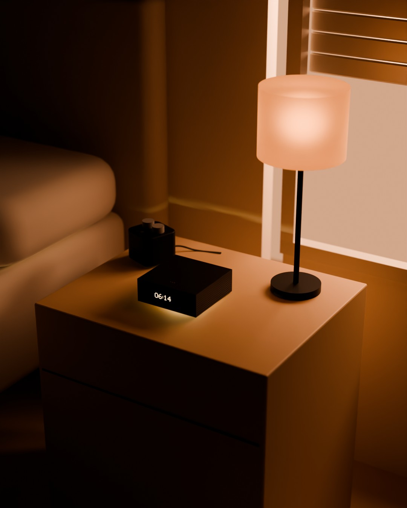
Dawn on the lamp, the shutters open, the ring turns amber.
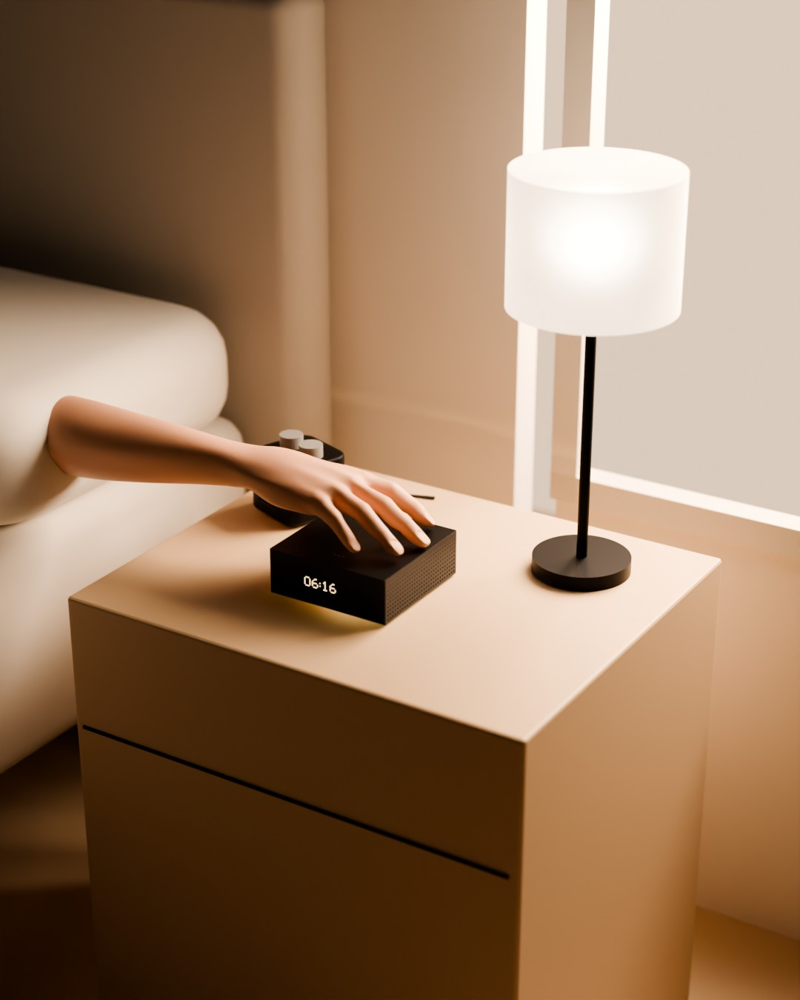
A palm on the base softens the sound; the light keeps rising.
Gestures
Four gestures replace the menus.
Take the bracelet
Means “I’m going to bed”: the wind-down starts, and the violet ring under the base dims with the room.
Palm held 3 seconds
Before you fall asleep: tomorrow off, or back on (OFF or ☀ 06:30). Forgot? In the morning hold it 5 s: today off.
Palm tap
The time is already on: the palm softens the sound but never moves the wake-up. By day, a touch shows the time for 8 s.
Put it back
Means “I’m up”: everything stops, even the alarm. The night syncs; the time shows the charge, then goes off.
Get up · Getting up does the rest: it is the only way to end the wake-up. The bracelet senses steps and an upright posture; there is no snooze.
Pairing button · At the back, beside the USB-C: pairs the base with the phone. Pressed once, never at night.
Light language
One colour for each moment: the front speaks by day, the ring by night.
Inside
Every part inside is a catalogue part.
Inside, rendered
The same parts, as they would come off the line.
Numbers as on the previous page. Real sizes from the datasheets: a populated four-layer board, two 36 mm drivers and a passive radiator using the whole sealed inside as their box, a 1000 mAh cell, every cable in place, all inside 120 × 120 × 45 mm.
App and safety
The phone sets the plan. Whatever fails, you still wake up.
What if…